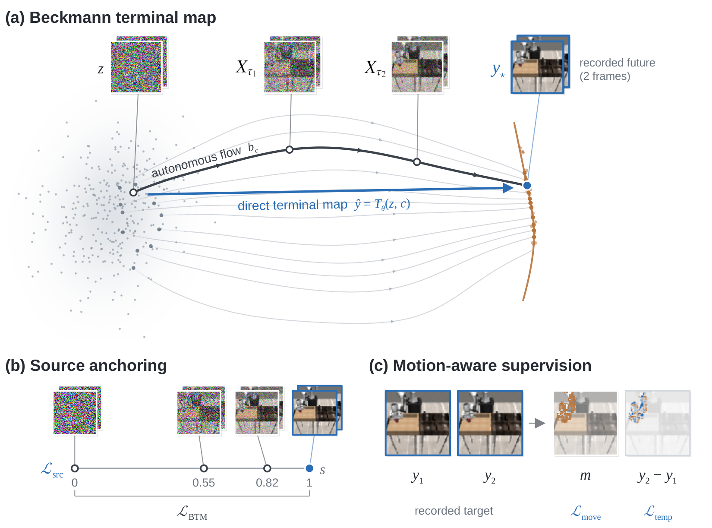
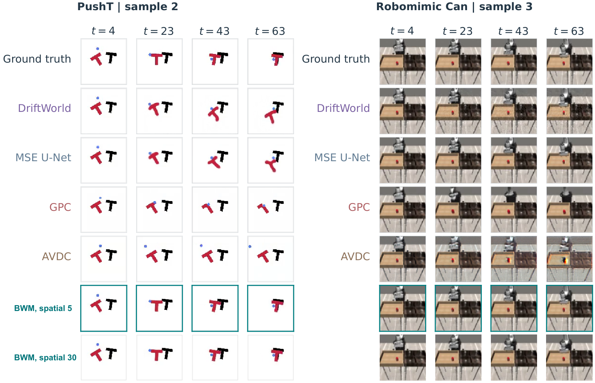
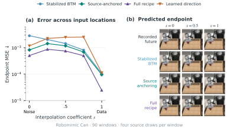
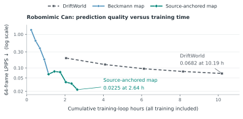

Beckmann World Models
Direct Terminal-Map Learning for
One-Step Action-Conditioned Prediction

Qualitative results
PushTSpatial epoch 30
Recorded framesBWM
Robomimic CanSpatial epoch 30
Recorded framesBWM
Bridge-V2Population refinement, epoch 70
RT-1Population refinement, epoch 70
Selected examples. RGB: four observed and 60 predicted frames. Native: VAE-reconstructed references, recorded context reset every eight frames.

Quantitative results
RGB prediction
| Model and training | PushT | Robomimic Can | ||||
|---|---|---|---|---|---|---|
| MSE ↓ | Motion MSE ↓ | LPIPS ↓ | MSE ↓ | Motion MSE ↓ | LPIPS ↓ | |
| MSE U-Net 5 epochs | 0.0303 | 0.4008 | 0.0804 | 0.0051 | 0.0544 | 0.0104 |
| DriftWorld 5 epochs | 0.0314 | 0.4093 | 0.0790 | 0.0104 | 0.0769 | 0.0682 |
| GPC 5 epochs | 0.0630 | 1.4241 | 0.1609 | 0.0276 | 0.3103 | 0.0589 |
| AVDC 5 epochs | 0.0684 | 1.1840 | 0.1860 | 0.0400 | 0.2644 | 0.1194 |
| BWM + spatial Spatial epoch 30, staged training | 0.0098 | 0.1247 | 0.0280 | 0.0022 | 0.0242 | 0.0056 |
388 PushT and 30 Can episodes. Four observed and 60 autoregressive predictions at 96 × 96 resolution.
Native video prediction
| Model and training | Bridge-V2 | RT-1 | Calls per frame | ||||
|---|---|---|---|---|---|---|---|
| SSIM ↑ | PSNR ↑ | LPIPS ↓ | SSIM ↑ | PSNR ↑ | LPIPS ↓ | ||
| Matched subset · 30 epochs · 2,078 Bridge-V2 and 2,041 RT-1 training episodes | |||||||
| DriftWorld Phase 1 | .813 | 21.919 | .104 | .814 | 22.419 | .129 | 1 |
| MSE U-Net | .813 | 22.439 | .166 | .815 | 23.026 | .179 | 1 |
| GPC | .642 | 19.932 | .335 | .694 | 20.692 | .294 | 3 |
| AVDC | .746 | 19.595 | .159 | .749 | 20.269 | .175 | 100 |
| BWM spatial Epoch 30 | .796 | 22.130 | .155 | .802 | 23.147 | .166 | 1 |
| Separate full-data continuations · 52,969 Bridge-V2 and 86,634 RT-1 training episodes | |||||||
| BWM spatial Epoch 60 · subset parent + full-data continuation | .860 | 25.214 | .126 | .888 | 27.585 | .106 | 1 |
| BWM + population refinement Epoch 70 · 10 additional epochs | .856 | 25.004 | .111 | .884 | 27.354 | .092 | 1 |
215 Bridge-V2 and 198 RT-1 episodes. Recorded context resets every eight frames. Metrics use VAE-reconstructed references. K = 8 during population training.

